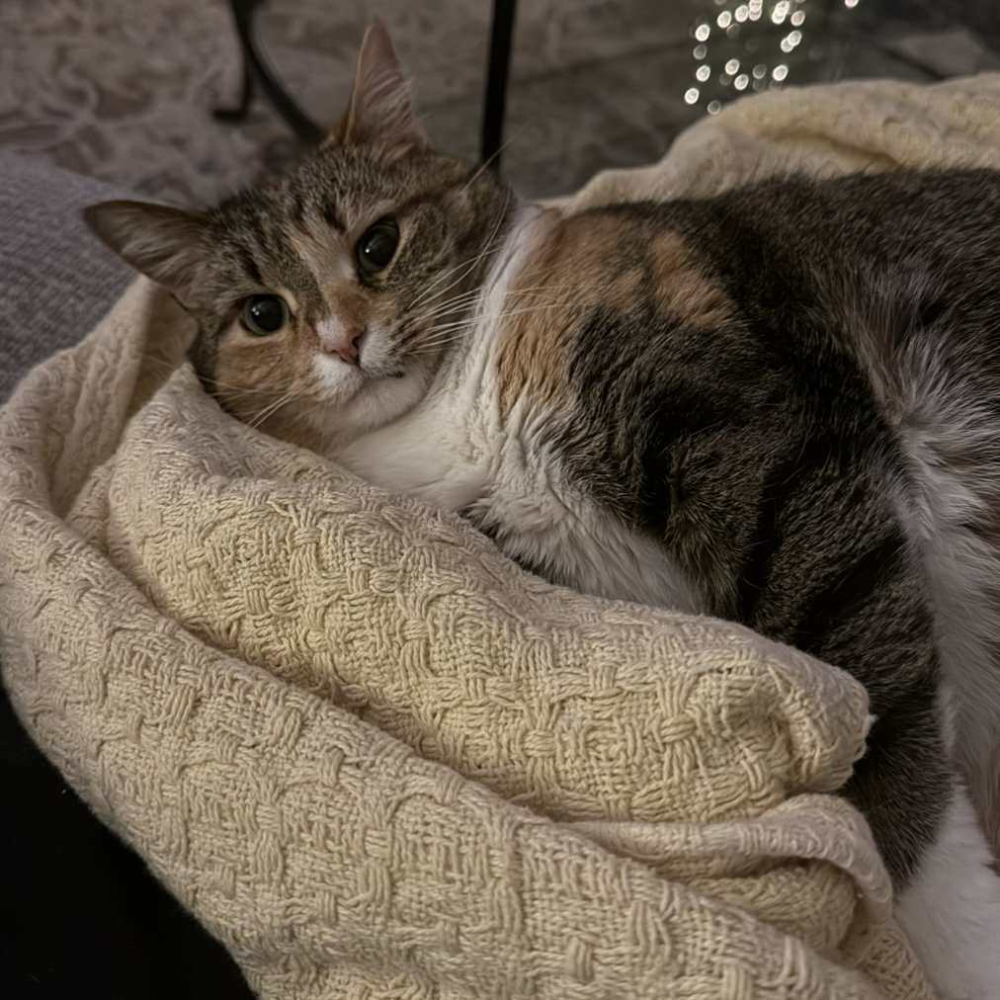

<!DOCTYPE html>
<html lang="en">
  <head>
    <meta charset="UTF-8" />
    <meta name="viewport" content="width=device-width, initial-scale=1.0" />
    <title>Nora's Notes | Whisker Knits</title>
    <meta name="description" content="Whisker Knits: My Blog and Knitting Notes">
    <meta name="keywords" content="knitting, knitting blog, cozy crafts, WIPs, projects, cats">
    <meta name="author" content="Nora Hobbs">
    <link rel="preconnect" href="https://fonts.googleapis.com">
    <link rel="preconnect" href="https://fonts.gstatic.com" crossorigin>
    <link href="https://fonts.googleapis.com/css2?family=Bodoni+Moda:ital,opsz,wght@0,6..96,400..900;1,6..96,400..900&display=swap" rel="stylesheet">
    <link rel="stylesheet" href="https://cdn.jsdelivr.net/npm/picnic">
    <link rel="stylesheet" href="https://cdnjs.cloudflare.com/ajax/libs/font-awesome/7.0.1/css/all.min.css" crossorigin="anonymous">
    <link href="https://fonts.googleapis.com/css2?family=Averia+Serif+Libre:ital,wght@0,300;0,400;0,700;1,300;1,400;1,700&family=Crimson+Text:ital,wght@0,400;0,600;0,700;1,400;1,600;1,700&family=Lora:ital,wght@0,400..700;1,400..700&display=swap" rel="stylesheet">
    <link rel="stylesheet" href="css/favorites.css" />
  </head>
</html>

<nav class="demo">
    <a href="#" class="brand">
        <span><i class="fa-solid fa-cat"></i> Whisker Knits</span>
    </a>
    <input id="bmenub" type="checkbox" class="show">
    <label for="bmenub" class="burger pseudo button"><i class="fa-solid fa-bars"></i></label>
    <div class="menu">
        <a href="index.html" class="button icon-puzzle">Home</a>
        <a href="wip.html" class="button icon-puzzle">WIP</a>
        <a href="complete.html" class="button icon-puzzle">Completed Projects</a> 
        <a href="https://www.ravelry.com/people/norahobbs03" class="button">My Ravelry</a>
    </div>
</nav>

<main>
    <div class="notes-page">

        <h1 class="notes-title">Nora’s Notes</h1>
        <p class="notes-subtitle">
            my diary of inspirations, yarn thoughts, and little life things ✿
        </p>

        <div class="notes-search">
            <input
            type="text"
            id="searchInput"
            placeholder="Search notes…">
        </div>

        <div class="note-entry" id="janfavs">
            <div class="note-date">February 8th, 2026</div>
            <h2 class="note-heading">January Favorites</h2>
            <p>Good morning!! Happy February! Instead of doing my “Book of the Month” post today, I wanted to pivot to talking about all of my January 
                favorites in a few different categories. My categories this month are: reading, listening, watching, wearing, and doing. </p>
            <p>Reading! In January I finished two books- “The Crown of Gilded Bones” by Jennifer L. Armentrout and “Heated Rivalry” by Rachel Reid. 
                Both of these books were good. “The Crown of Gilded Bones” took me a while to read, but this series has been consistently good. Kieran's 
                character is one of my favorite parts of the series. “Heated Rivalry” was a quick read, and trust, we will circle back to this later. I 
                would say, of these two books, my favorite for January was “The Crown of Gilded Bones.” </p>
            <p>Listening! My top streamed song, artist, and album for the month of January were “Kitty Kat” by Beyoncé, Beyoncé, and “Renaissance” by Beyoncé. 
                Are we sensing a theme? I love Beyoncé!!! I have my fingers crossed for an Act III announcement this month. Rock is one of my favorite genres, 
                so seeing Beyoncé’s take on it is very exciting. A few other favorites of the month (though not my most streamed) were “mangetout” by Wet Leg, 
                “Idaho” by Slow Pulp, and “Heavy Metal Lover” by Lady Gaga.</p>
            <p>Watching! I have two favorite shows for January- “Heated Rivalry” and “RuPauls Drag Race” Like everybody else, “Heated Rivalry” was one of my 
                favorites of the month. I liked the show better than the book, so I would definitely recommend the show over the book to anyone. Or, if you are 
                going to do both, watch the show first. Love Hudson Williams. Love Connor Storrie. Moving on. Drag Race is always a January favorite for me. I 
                love the show so much, but I also love the traditions my friends and I have for every new Friday episode. This is our last January in our college 
                town, so I am appreciating the show even more this time around. My favorite queen of the season is Darlene Mitchell. Big fan. Moving on. </p>
            <p>Wearing! I got a tank top from Aritzia this month, and it is now my favorite thing ever. I had to stop myself from online ordering it in three more 
                colors. It is so soft and flattering, and I am just obsessed! I need it to not be 30 degrees outside and snowing so I can wear it.</p>
            <p>Doing! Recently, I’ve been going to the gym on my lunch break to walk on the treadmill, and I am loving it. I put on my Lady Gaga and my Beyonce and I 
                just walk and walk and walk. It makes me feel better about sitting at my computer eight other hours of the day. It is also helping me reach my goal of 
                keeping my step count up. I need to keep this habit up.</p>
            <p>Other miscellaneous favorites: chia seed pudding, Connor Storrie again, working from home, budget tracking on Excel, stats.fm, Queens Who Like to Watch, okay bye!!!!!!!</p>
            <p><a class="links" href="https://www.aritzia.com/us/en/product/butter-agility-sports-tank/127179.html?color=36342">Link to Tank Top →</a></p>
       </div>

        <div class="note-entry" id="midjan">
            <div class="note-date">January 18th, 2026</div>
            <h2 class="note-heading">Mid-Month Check In</h2>
            <p>Hello!!! I hope everyone has had a great start to the new year. Time is already flying. A little update from me: I am officially one week 
                into my first 8–5, and I’m enjoying it so far. I really like having my evenings back. I used to work in restaurants, and there is just 
                something about being on the clock until 10 pm that I do not miss. Having my weekends back has been really nice too.</p>
            <p>I’ve made good progress on my reading goal for the year. I’ve already finished one book in January. I’m still planning to do a “Book of 
                the Month” note, so I’ll save my thoughts for then. I’ve been listening to a lot of John Denver and also Beyoncé. Two albums specifically: 
                “Rocky Mountain High” and “Homecoming: The Live Album.” Different vibes, but loving them both a lot. As always, I’m watching anything and 
                everything Trixie and Katyam, and I’m also watching the new season of Drag Race. My favorite queen of this season has to be Darlene Mitchell. </p>
            <p>Still working through my Cloud Sweater. I need to get better about working on that consistently. I’ve hit the body, and I always slow down around 
                this point. It just feels so neverending. </p>
            <p>Binns’s current favorite spot to nap is on my bed, under the covers. She is so cute. Here is a recent photo of her. I hope everyone has had a good 
                start to the month! </p>
            
        </div>

        <div class="note-entry" id="resolutions">
            <div class="note-date">January 4th, 2026</div>
            <h2 class="note-heading">Goals for the Year Ahead</h2>
            <p>Happy New Year!! Like everyone else, I’ve been reflecting on 2025 and thinking about what I want to do differently in the year ahead. 
                I’ve compiled a list of some resolutions for 2026, and I thought posting them here might help keep me accountable.</p>
            <p>I think my overall theme for the year is going to be intentionality. I want to spend my time doing things I enjoy or working toward a goal. 
                Aka, getting off my phone. Most of my resolutions fall into one of two categories: creative goals and lifestyle goals.</p>
            <p>The first of my creative goals is to read at least one book per month. I love Goodreads because I enjoy any way to track progress or look 
                over stats at the end of the year. I like being able to reflect on all I’ve done (hence Whisker Knits). My goal is to read at least one book 
                every month this year. I’ve set my Goodreads goal to 12 books, and I’m determined to do it. I’m also thinking of doing a “Book of the Month” 
                post here to reflect on whatever I read that month.</p>
            <p>My second creative goal is to be more consistent with knitting. I was a little hot and cold with it throughout 2025, so this year I want to 
                show up more regularly. Even if I can only devote 20 minutes a day, I want to make the time. I think having this space to document my projects 
                will help me stick with it.</p>
            <p>My third goal is to listen to more music throughout the year. This one’s a little silly, but I’m serious about it! I fell victim to Spotify’s 
                DJ last year, and it completely ruined my ability to make playlists. I think listening to a new album every week or every other week will 
                help me discover new songs I love again.</p>
            <p>I only have two “lifestyle” goals for the year. The first is to get my step count up. I just need to take a little walk! The second is to 
                make sure I foster a healthy work-life balance. This year I’m starting my first 9-to-5, so I want to be intentional about keeping up with 
                my hobbies and the things I enjoy outside of work, which ties back nicely to my creative goals.</p>
            <p>Anyways! I’ll be sure to update here with my knit projects and books of the month. I hope everyone has had a great start to 2026. </p>
       </div>

        <div class="note-entry" id="holiday-favorites">
           <div class="note-date">December 29th, 2025</div>
           <h2 class="note-heading">Holiday Favorites</h2>
           <p>Happy holidays! I’ve been spending time with family and friends in my hometown, and I always love coming home. There’s nothing quite like my 
            parents’ cooking and a comfy couch. I’m lucky to have a family full of great cooks, so I’ve been on dessert duty for all family dinners. No 
            complaints from me though, I’ve always preferred baking to cooking. This year I tried two new cookie recipes: snickerdoodles, requested by my 
            grandma, and hot cocoa cookies, just because they looked yummy. Thankfully, both were a success. If I had to recommend one, it would be the 
            snickerdoodles. They are a classic and were a hit with everyone. 
            </p>
            <p>I’ve also been knitting for friends, which is something I’ve never really done before. Knitting usually takes me so long that, selfishly, I 
            don’t want to give projects up once they’re finished. This year, though, I made three gifts and actually enjoyed the whole process! Picking 
            patterns I thought each friend would love and appreciate and finally giving the finished project was very rewarding. My attitude toward gift 
            knitting has definitely changed. Keeping those projects small is the key! Plus, getting to see my friends in the things I made them is just too cool. 
            </p>
            <p>Another holiday favorite of mine has been The Great British Bake Off. I can’t believe it took me so long to start watching it because I love a 
            good baking show. I started with the newest season and I am a big fan of Jasmine, who ended up winning. Her flavor choices always sounded delicious, 
            her designs and decorations were the cutest, and her outfits were just as good.
            </p>
            <p>Now that my gift knits are finished, I’m back to working on my cloud sweater. I’m hoping to finish it in time to wear it before the weather warms up again. 
            I think I can do it! 
            </p>
            <p><a class="links" href="https://www.modernhoney.com/the-best-snickerdoodle-cookie-recipe/#wprm-recipe-container-14233">Snickerdoodle Recipe →</a></p>
            <p><a class="links" href="https://www.twopeasandtheirpod.com/hot-cocoa-cookies/#wprm-recipe-container-47565 ">Hot Cocoa Cookie Recipe →</a></p>
            <p>And here is sweet Bean.</p>
            
       </div>

        
        <div class="note-entry">
           <div class="note-date"> December 24th, 2025</div>
           <h2 class="note-heading">Glove Archive</h2>
           <p>December 24th: I ordered some new short circular needles for this project, and I loved them. I would so much rather use those than do magic loop. 
                Magic loop for just the little thumb is already too much. Also, I have been making a lot of edits to this pattern. All of my changes
                have been inspired by the Petite Knit Penny Gloves. Instead of any ribbing, I did one round of purling at both ends of the mittens. 
                I also knit the wrist part of the gloves a little longer than the suggested four inches. All I have left right now is the thumb on 
                one glove, then I'm done! 
            </p>
            <p>December 27th: I got to give these gloves to my friend Katw this morning! While working on these, I was not a huge fan of this yarn. 
                I love the color, and I don't mind the feel of it, but it was not very forgiving to any loose stitches around the thumb pick up. But 
                maybe thats a me problem! The first thing Kate said was that she loved the yarn, so that made me feel better! These knit up very quickly,
                so I would totally recommend this pattern to any beginners or for any gift knit. 
            </p>
       </div>

        <div class="note-entry">
            <div class="note-date">December 16th, 2025</div>
            <h2 class="note-heading">Headband Archive</h2>
            <p>December 10th: I casted this project on using a provisional cast on as suggested in the pattern.
                I've only ever used long tail cast on, so it definitely took me a few attempts. But, I got it!
                This headband is going to be a Christmas present for my friend Lainey, so I am hoping to get it
                done in the next few days. I love this yarn so much. I just recently finished another project using 
                this yarn as well. It is so soft, I love the color, and I think my friends will really like it too!</p>
            <p>December 11th: I was able to work on this a bit today! Right now it is 15cm. I am liking this pattern.
                Love a good repetitve pattern where I don't really need to pay attention or think about what I am doing. 
            </p>
            <p>December 17th: It is off the needles and blocking currently! I used the kitchener stitch to sew the two ends
                together. It looks really nice and seamless! I had never used this technique before, so I had to watch a few 
                videos, but it was easy to pick up!
            </p>
            <h3>Videos that Helped Me Out:</h3>
            <p><a class="links" href="https://www.youtube.com/watch?v=m5Ho0G7aIZQ&t=192s">How to do a provisional cast on →</a></p>
            <p><a class="links" href="https://www.youtube.com/watch?v=Q-jEGCUed0s">How to do the kitchener stitch →</a></p>
        </div>

        <div class="note-entry">
            <div class="note-date">December 15th, 2025</div>
            <h2 class="note-heading">Sophie Scarf Finishing Touches</h2>
            <p>Today, I am blocking the Sophie Scarf I knit for a friend for Christmas. I'm hoping that while blocking the scarf will grow a bit in length. 
                I am also planning to sew in a custom tag I ordered from an Etsy shop this summer. I've never done that in a project before, so I am excited to see how it looks!
            </p>
            <p>Just blocked. It looks likes its going to end up at 92 cm! I wish I wrote down the length before blocking, I want to guess it was around 
                85cm?? Not too sure. 
            </p>
            <a href="https://www.etsy.com/listing/163345253/?ref=share_ios_native_control" class="links">Link to Custom Tags</a>    
        </div>
    </div>
</main>

<footer>Whisker Knits by Nora and Binns</footer>

<script>
  const searchInput = document.getElementById("searchInput");
  const notes = document.querySelectorAll(".note-entry");

  searchInput.addEventListener("input", function () {
    const query = searchInput.value.toLowerCase();

    notes.forEach(note => {
      const text = note.innerText.toLowerCase();
      note.style.display = text.includes(query) ? "block" : "none";
    });
  });
</script>

